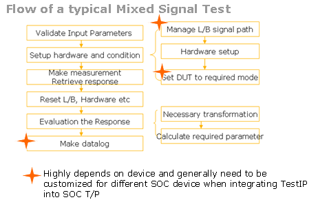
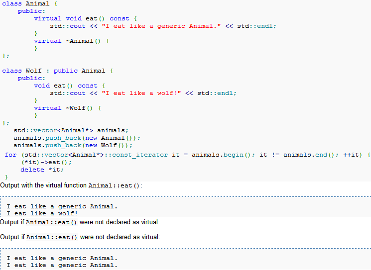
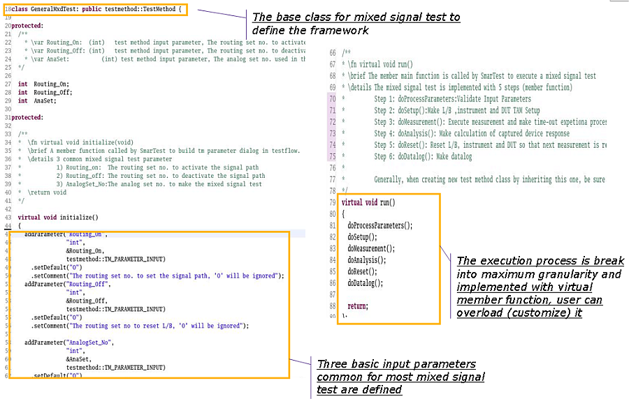
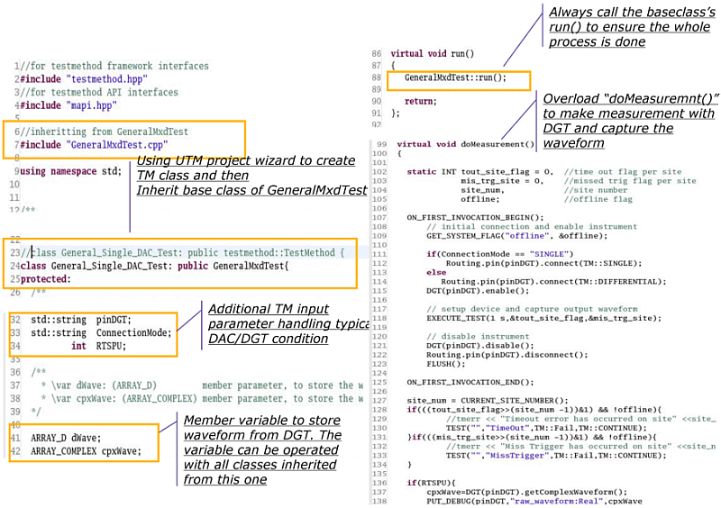
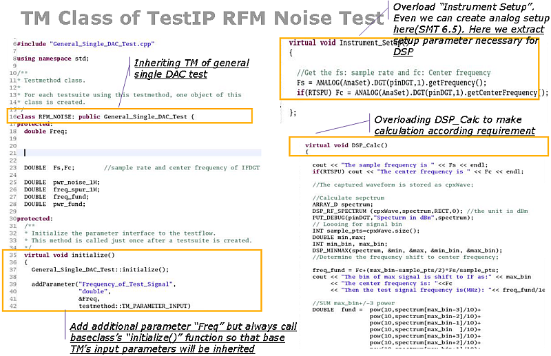
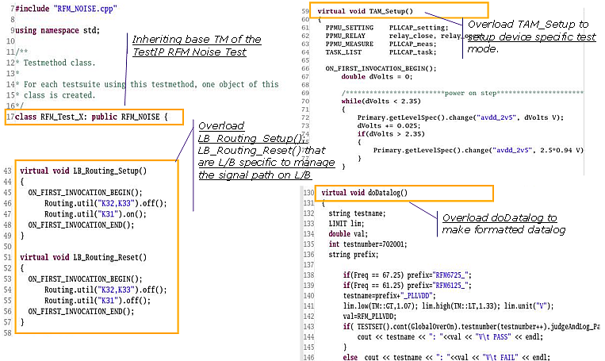

Using "Inheriting and Overloading" concept in creating reusable universal test method library
ZhiJun Xue, Zane Jiang, Verigy
Paper-ID: 127883 May 2011
Introduction
Test method is a critical software component in the V93000 test program. For a determined test condition and instrument, the test procedure, which is implemented with test method, is highly reusable. This article introduces how to build a reusable but customizable universal test method (UTM) library.
The basic idea is to leverage the "design pattern" concept in software engineering. A "design pattern" is a general reusable solution to a commonly occurring problem in software design. A "design pattern" is a description or template on how to solve a problem that can be reused in many different situations. Carefully studying the test procedure of a mixed signal or RF IP block, we can find that the procedure fits some "pattern" so that the "design pattern" concept can be leveraged in creating test method.
Template method Pattern Introduction
This article will introduce one pattern to handle specific issues that happen when developing a kind of TM code in the V93000. Sometimes test engineers want to specify the order of operations of some kind of test, such as a general RF test, but allow variation for their own implementations of some of the steps. A general mixed signal and RF test "design pattern" can be described as the following diagram, and we can use the "template method pattern" in implementing the test method.

Figure 1: The pattern of a general mixed signal or RF test
The Template Method pattern is a fundamental technique for code reuse.
It defines the skeleton of an algorithm in one test, deferring some steps (for example, "manage L/B signal path, Hardware setup" etc) to subclasses. Template Method, which is implemented with a C++ class, lets subclasses redefine certain steps of an algorithm without changing the algorithm's structure.
With C++ programming, first a class is created that provides the basic steps in the "template method pattern". These steps are implemented using methods. Later on, subclasses change the methods in parent class to implement real actions. Thus the general Task is saved in one place but the concrete steps may be changed by the subclasses. The template method thus manages the larger picture of test semantics, and more refined implementation details of selection and sequence of methods.
This larger picture calls abstract and non- abstract methods for the test at hand. The non-abstract methods are completely controlled by the template method but the abstract methods, implemented in subclasses, provide the pattern's expressive power and degree of freedom. Some or all of the abstract methods can be specialized in a subclass, allowing the writer of the subclass to provide particular behavior with minimal modifications to the larger semantics.
The template method (which is non-abstract) remains unchanged in this pattern, ensuring that the subordinate non-abstract methods and abstract methods are called in the originally-intended sequence.
The template method pattern is very useful in TM development especially for:
- Let subclasses implement (through method overriding) behavior that can vary behavior to fit a dedicated DUT, DUT board and test requirement;
- Avoid duplication in the code: localize common behavior (for example, start sequencer, data
uploading, etc.) among subclasses and place it in a common class (in this case, a super
class).
In other words, the test engineer can focus on DUT, DUT board and waveform processing stuff, instead of those instrument relevant activities; Those instrument relevant activities in common class (super class that is finally delivered as a shared library) can be easily upgraded while not changing the code in subclass;
- The best practice (for example, SmartCalc framework, suitable use of "FLUSH" etc.) can be placed in a common class, so that high efficient test program can be expected;
- Control at what point(s) sub-classing is allowed. As opposed to a simple polymorphic override, where the base method would be entirely rewritten allowing radical change to the workflow, only the specific steps/details of the workflow are allowed to change;
In a template method, the parent class calls the operations of a subclass and not the other way around. This is an inverted control structure that's sometimes referred to as "the Hollywood principle," as in, "Do not call us, we'll call you".
There is basic C++ knowledge used in the above pattern.
Inheritance lets the developer define classes that model relationships among types, sharing what is common and specializing only that which is inherently different. Members defined by the base class are inherited by its derived classes. The derived class can use, without change, those operations that do not depend on the specifics of the derived type. It can redefine those member functions that do depend on its type, specializing the function to take into account the peculiarities of the derived type. Finally, a derived class may define additional members beyond those it inherits from its base class.
Virtual functions overcome the problems with the type-field solution by allowing the programmer to declare functions in a base class that can be redefined in each derived class. Virtual functions can be used to define different behavior dynamically during TM executing.

Figure 2, An example of C++ inheritance, overloading and virtual function
The introduction of self-contained, registration free "Unified Test Method" since SMT 6.1 provides a powerful tool in implementing the above concept. First of all, the new style test method is just a C++ class and the developer can use inheritance or overloading methods to refine any steps in the run () function but not touch the source code. The customization can effectively handle the diversity of routing setup, analysis algorithm, datalog, etc.
The hierarchy structure of a test method library
In the following section, we introduce how to build a comprehensive test method step by step by inheriting a father class in the library.
Figure 3 is the base class GeneralMxdTest, which is the implementation of the mixed signal test "template method pattern" as shown in Figure 1.

Figure 3 Customizable test method - the general mixed signal tet method class
C++ virtual function is defined and used in the "run()" that is actually invoked by SmarTest to execute a test. The "execution" process is broken into maximum granularity so that if necessary, the developer can re-define any virtual member function in the child class.
In fact, in the base class, we Do not actually define any virtual function and just provide a framework. Developers can overload that virtual function according to their requirements in the child class.
- doProcessPrometers(): Validate input parameter;
- doSetup():
- Instrument_Setup(): setup analog module and all other modules, analog setup can be called here or with API to program analog module (smartest 6.5);
- TAM_Setup(): Setup the DUT to a test mode, a general case is to invoke protocol transaction API to modify a pattern and then run the pattern to set up registers;
- LB_Routing_Setup(): call a routing setup or with API to manage the signal path on the loadboard.
- doMeasurement(): Execute the test, make exceptional error processing for example, timeout, no trigger etc.) and then retrieve captured response to workstation
- doAnalysis():
- Data_Transform(): Make necessary transformation of captured waveform etc.
- DSP_Calc(): Calculate required result;
- doReset(): Reset loadboard, analog module, etc. and make them ready for next measurement;
- doDatalog(): Make datalog.
Figure 4 illustrates inheriting the GeneralMxdTest to create a general class for single DAC test, the key overloading is as the virtual function "doMeasurement", in which a general single digitizer operation is implemented.

Figure 4 Customizable test method - General single DAC test test method class
Figure 5 illustrates the process of creating a test method for a specific DAC noise testing, by inheriting the General DAC test class General_Single_DAC_Test. The key overloading here is the virtual function "Instrument_Setup" and "DSP_Calc". In the function Insturement_Setup(), we coded the DGT setup (for example, sample rate, etc. that is necessary to make the DAC noise measurement); while the overloaded function "DSP_Calc" is to implement the customer defined algorithm in calculating the noise.

Figure 5 Customizable test method - Test method class of TestIP RFM noise test
The final test method class to execute an RFM DAC noise measurement is in figure 6. To implement the noise test of an RFM DAC in an SOC, we need to make a suitable LB connection, as overloading the virtual function "LB_Routing_Setup". Another necessary setup is to control the DUT suitable for the RFM DAC testing, and this is implemented by overloading the virtual function TAM_setup().

Figure 6 Customizable test method - Test method class of device specific RFM noise test
Conclusion
The introduction of UTM opens the door to using some object oriented programming methods, such as "design pattern", "inheritance and overloading," etc. in test method programming. With this software method, we can build reusable and easy-to-customize test methods efficiently.